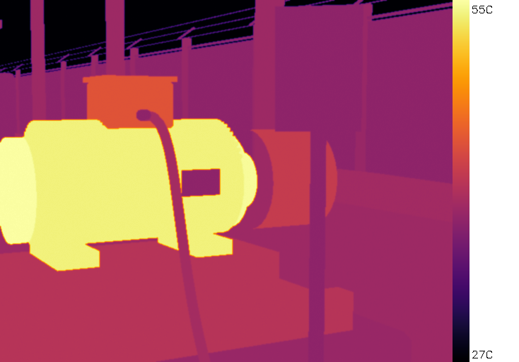
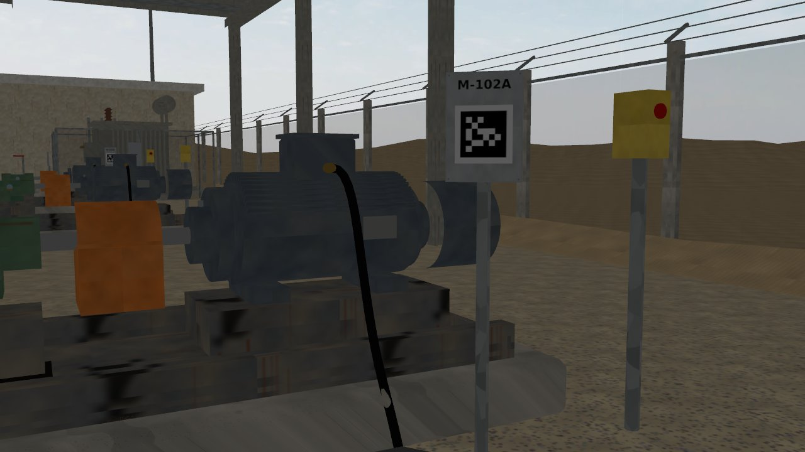
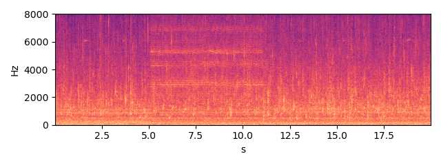
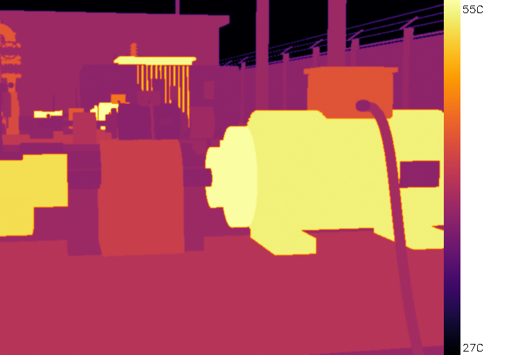
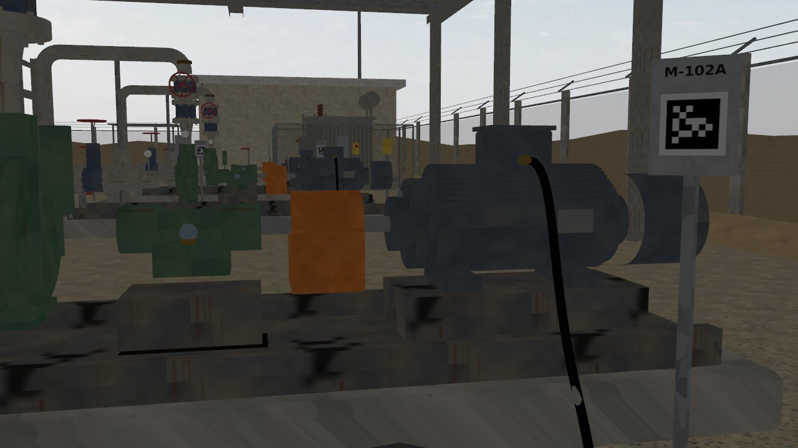
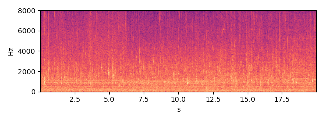

M-102A — TEFC induction motor, 2-pole, 50 Hz
Status none HI 0.81 RUL 9.8 d [5.1-24.5] (band = 90 % interval)
Health indicator per inspection round; vertical lines = maintenance log entries; red band = RUL estimate.
Inspection snapshots (robot camera and microphone)
From the Gazebo full-mode rounds of the same seed (scenario days 1-3, open loop); the trend above is the 21-day fast-mode run. They are different runs.

thermal, aim 1, max 55.1 C (Gazebo round 2026-10-03 16:41)

RGB, aim 1

sound, aim 1 (dwell window)

thermal, aim 2, max 57.1 C (Gazebo round 2026-10-03 16:41)

RGB, aim 2

sound, aim 2 (dwell window)
Alarm history
| time | level | fused score | HI | reasons | work order |
|---|---|---|---|---|---|
| 2026-10-18 13:05 | warning | 7.65 | 0.656 | acoustic_fusion |
Maintenance log (CMMS view)
| date | type | details |
|---|---|---|
| 2026-10-21 | greasing | {"part": "motor_de_brg"} |